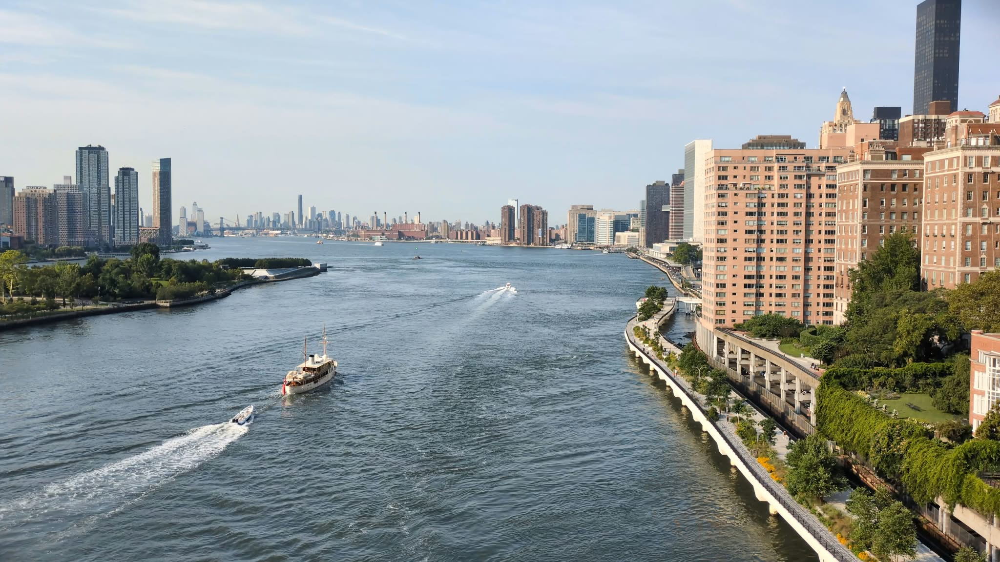

“The city seen from the Queensboro Bridge is always the city seen for the first time, in its first wild promise of all the mystery and the beauty in the world.” - Nick Carraway, The Great Gatsby.
There is a monster that connects Queens to midtown Manhattan. It’s a machine, a collection of steel parts glued together without a care for elegance. Over the East River, which keeps an impressive diary of the gorgeous neo-Gothic Brooklyn Bridge, and the well-photographed Manhattan Bridge, the Queensboro Bridge looks like a construction project that was supposed to be taken down at the turn of the 20th century. Unlike other East River bridges that use suspension cables, it cannot sustain its own weight and uses Roosevelt Island below to rest two of its piers. It does not know beauty, it has never known romance.
It’s no secret that I struggle with regulation. I am a pretty unstable person and I have always been this way. When I look back, and I do look back often, I find no anchors that I can point towards. There is no root. There has only ever been one continuity, and it’s myself, or rather, my body. Something deep inside of me is flawed beyond repair and all the significant battles in my life have been about containing it. I have, in my time, both won and lost.
I can hardly understand my emotional landscape. No more than I can understand myself. Long ago, I figured out that everything about me was wrong. I have, throughout my life, made attempts at coming to peace with this fact. But there is no peace when your insides are in conflict. There is only the passing of time, with you as the observer in your own story. You see everything, you feel everything, you take actions on your own, but you are not at the helm. You end up merely as a representative of yourself to the outside. A figurehead, a symbol. They see you, and you make the case for yourself in their world. It’s not a very strong case but it does the job. It strengthens your identity, and thereby, your position. But that feeling only grows. Every distraction you find, it reverts its course and comes to haunt you. You never break free.
The Queensboro Bridge has a complicated relationship with Roosevelt Island, its most prominent support. For nearly four decades starting in 1919, a vehicular elevator connected the middle of the bridge to the island below it. This, along with the fact that the bridge made Queens accessible by road, caused the decline in Manhattan—>Roosevelt Island—>Queens ferry services. After the elevator was shut down in 1957, the island started becoming less and less relevant in the larger NYC public consciousness. There is now a cable tramway that runs alongside the bridge from between 59th and 60th Sts. to the island. The bridge looks over the cable car in silence as it loses all communication with its rock beneath. They grow further and further apart.
I sometimes, in my own thoughts, attribute my loss of innocence to the day I left the womb. My first cries in the hospital must have called upon an ancient harmony, the first of many throughout my life, and I ended up cursing myself for the first time. It’s nobody’s fault. There is only so much sonic potential a newborn has and mine just happened to coincide with an irreversible spell. Still today, my vocal cords reflect that potential. The way my larynx knows that foulness is to be expected when it pushes air towards my mouth, the way my tongue glides without command to form the most repugnant sounds known to me, and the way my lips show no restraint in letting that sound travel outward into the world.
The most I have ever cursed myself may have been in the summer of 2023. It was my most serious attempt, then, at containing my curses to myself. For many months prior, I had done enough damage by willingly passing my curses onto others. I had thought that given enough people to diffuse into, the sink would be bigger than the source and all of it would disperse. But I had underestimated how grand was the reservoir of ugliness inside of me. Everyone I touched, I ended up transmitting more than I could see them handle. Soon enough, there was no more purity around me, I had contaminated everything.
To prevent a disaster, I isolated myself. I quit every commitment and found comfort in seeing the number of bottles in the corner of my room grow every passing hour. I made sure that my lungs were always dense and I made sure that I expressed to my body just how much I hated it. None of it was enough. The double-black curtains on my window kept me from knowing if there was sunlight outside. I stayed in, for weeks on end, stern in the belief that if the only voices I hear are from the computer, I can ruin nothing but myself. Voices scared me. They implied existence. I hated existence. There were nights where I corroded the linings inside of my bladder because I could hear voices in the hallway. Whatever I had set out to do, I was doing it efficiently.
An average of 2,785 pedestrians crossed the Queensboro Bridge daily in 2023. From August 1 to August 21 of that year, I was one of them. The bridge has two non-vehicular pathways, both located in the outer roads of the lower deck. The southern path had been closed for renovations, so the northern path was shared by both cyclists and pedestrians. It was a narrow path, and one had to stop frequently to let a cyclist or a pedestrian going the other direction pass through. To walk to the Manhattan side and back from where I lived took a little over 3 hours. When you walk that path, there is nothing but steel and water to see until you’re a quarter of the way through, which is when midtown suddenly and rapidly starts rising in front of your eyes. It’s a spectacular scene, but one that makes its impression on the observer over the span of some half hour, as compared to most beautiful scenes that look beautiful the moment you set your gaze upon them. The southern path, which was inaccessible, had a bigger field of view. Because it faced the harbor, walking there must have unlocked, in addition to midtown, the views of all of downtown, the three downtown bridges, and half of Brooklyn. It was always a wonder what the other side looked like.
The first trip I made was out of spite. After weeks of shutting myself in, I found inside of me a longing for change. But I was too deep into what I had chosen. The familiarity of addiction is a much warmer hug than the choking grip of change. I got out and decided to walk until my legs gave up. I did not intend to go to the bridge, I was only walking as far away as I could. And I didn’t find any trace of the beauty I described so fondly earlier. However, something in me that I cannot fully describe made me walk the same trip again the next day. I took the same streets, drank water from the same public faucet, and got onto the bridge at the same junction. I kept doing it for days. I walked the same path, returned the same. Soon it became a habit and I did it for 3 weeks straight.
Walking the bridge is the one thing that helped me escape a very dark period of my life. Earlier I had said that the ugliness in me is so vast that nothing can sink it. I was wrong. The rusty industrial-era steel in the Queensboro Bridge and the cold, unforgiving East River, which is neither a river, nor has a fixed flowing path and changes direction on whims, are both much larger than everything I have inside of me. They can take it all and remain unmoved. They took it all and remained unmoved.
The Queensboro Bridge was built in an era when engineers were pushing steel to its limits. Its curves aren’t graceful, they are ragged, like lines drawn against a ruler with a pencil. It looks like an intermediary, something that waits patiently until a better version comes along and replaces it. It doesn’t grieve itself, at least not yet, because it has a duty to perform. And it has been doing its job continuously for the past 117 years.
Time has gifted me both perspective and detachment enough to write a flash memoir about that period. All of this was three years ago. I have since walked that path many times with many people. People I had never thought I would walk the bridge with, none knowing why it mattered to me. People from different facets of my life, all of whom I care deeply for. Its significance in my life has grown, just as I believe I have grown. I must have.
Last week, I had just enough time to walk the bridge again. To my surprise, I found the northern pathway reserved for cyclists and the southern pathway fully renovated and open. This time, I walked the other side. It was beautiful.

“You didn’t know it, you didn’t think it could be done, in the final end he won the war after losing every battle” - Bob Dylan, Idiot Wind